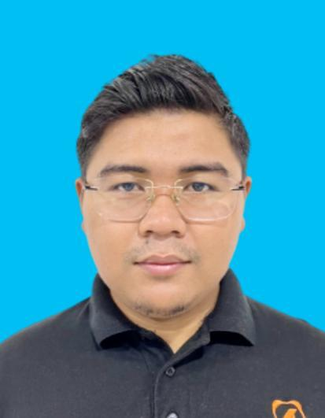

Cloud, VoIP & Infrastructure Architect | Tech Enthusiast
"Full-stack technologist who understands technology from the lowest network layers to the highest application logic"
I am a full-stack technologist who understands technology from the lowest network layers to the highest application logic. I don't just handle apps, I can also build the ecosystem that supports, secures and scales them.
From the moment a user opens a browser, I understand how DNS is resolved, how Layer 2 MAC addresses help with packet delivery, how NAT translates IPs and how TCP/TLS encryption ensures security. I follow every packet as it flows through routers, firewalls and load balancers, all the way to the web server where reverse proxies inspect headers and direct traffic.
On the application side, I'm fluent in modern web stacks: React, Node.js, PostgreSQL, JWT, bcrypt, multer and more. I develop backend logic, APIs, authentication systems, file handling services and database structures. I also know how to containerize and orchestrate these systems using Docker, NGINX and cloud services on AWS (EC2, RDS, Route 53).
Beyond that, I specialize in VoIP engineering. I've configured, managed and debugged complex SIP infrastructures involving Telcobridges, AudioCodes and Yeastar. I read SIP headers, SDP payloads and RTP traces to resolve latency, one-way audio, codec mismatches and registration errors.
I'm not a checkbox engineer. I solve problems that others avoid. Whether it's a failing TLS handshake, a misbehaving SIP trunk, a DNS propagation error or an AWS security misconfiguration, I get to the root of it.
To amplify my technical foundation, I pursued an MBA to better understand how business, management and strategy intersect with engineering. This gives me a unique edge: I not only build systems that work, I build systems that align with business goals.
Kuala Lumpur, Malaysia
Kuala Lumpur, Malaysia
Kuala Lumpur, Malaysia
Subang Jaya, Selangor, Malaysia
Subang Jaya, Selangor, Malaysia
I am just a tech enthusiast who works with passion. In my free time, I develop websites as it is my medicine—my way to unwind and apply everything I learn at work.
I founded Vertechions (also known as Veritas Tech Solutions), a web development business where I build websites using proper coding practices and modern technical stacks. Through this venture, I've gained hands-on experience with full-stack development, DNS management, DNSSEC implementation and infrastructure automation.
I manage my own DNS infrastructure, applying enterprise-level practices to my personal projects. Currently, I'm implementing an AI chatbox on my website to enhance user interaction and provide intelligent assistance to visitors. This project combines my passion for AI, web development and user experience design.
Every technology I implement at work, I also apply to my own infrastructure. This hands-on approach keeps me sharp and allows me to experiment with cutting-edge solutions in a real production environment.
Visit https://vertechions.com